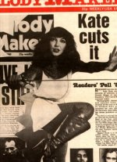

To the Reaching Out (Interviews) Table of Contents

To
the Reaching Out (Interviews) Table of Contents

(Cover
courtesy of Emmy May Lombaerts)
This article was taken from Andrew Marvick's The Garden
[The following interview appeared in the Oct 4, 1980 issue of Melody Maker. Although the interviewer sometimes seems pre-occupied with Kate's sensuality he does exhibit some knowledge of Kate's music, and seems to have some respect for it. He also manages to elicit some fascinating comments on how she portrays the characters in her songs. Transcribed by MarK T. Ganzer (Thanks, MarK!). Edited by Andrew Marvick.]
Corridors. Bland antiseptic corridors leading nowhere and lasting forever. An occasional flight of stairs to negotiate; the odd babble of German chatter that passes without interest or acknowledgement; a dressing-room bearing the name of Loudan Wainwright momentarily raises spirits.
A multi-coloured sign in bizarre lettering that stinks of the Sixties' psychodelia smacks you between the eyes, the legend just decipherable as RockPop, accompanied by a little arrow that suggests that you're getting warm.
More corridors, steps, signs and then the final triumphant indication of imminent victory. The Voice.
It shrieks high above the cacophany of silence, like a crazed cockerel on a berzerk roller-coaster. Initially wild and formless, it quickly begins to bear shape and recognition as we approach it with increasing urgency.
"Whenshewuz...biew-tee-foool...shesy-yned the lett-tah... Mmmaaww-yooors Babooshkababooshkababooshkayaya-ah..."
diddle-dee-dum bang crash...
Babooshka
Babooshka
Babooshka."
Suppressing lust, cameramen zoom in and out, caught up in the mania of the music. Official-looking geezers grip clip-boards which threaten to snap in two under the ferocity of the clasp, and assorted clusters of people hover in the background solicitiusly pretending not to be impressed or to notice, but still helpless to prevent jaws dropping open with neither dignity nor discretion.
Kate looks stunning. She wears scarlet trousers that flair absurdly from the thighs down, but sink their teeth into her buttocks with obscene determination. The matching tee-shirt is breathtakingly skimpy and looks like it's been painted on her.
She clutches a double bass, her body contorting around it in a transfixing demonstration of mime as Babooshka's drama of love, suspicion, trial and ultimate faithlessness unfolds.
The double-bass is alternately the object of her lust and her fury; she wraps herself around it, she grinds against it, she beats the hell out of it, she wrings its neck, she claws it, she slithers down its neck, she blows in its ear.
Her face pouts and spits and leers and jeers and dreams and schemes and ravishes; and all the while bottom jerks and thrusts from one end of the studio to the other.
It's the most erotic thing I ever saw.
A weird month for Kate...a crucial one for EMI. The new album, Never For Ever, took six months to record. It was completed three months ago, but EMI decided to hold back on its issue because of other major issues around the same time. The one genuine new superstar in the team, it was essential this one made a huge splash.
In keeping with the Bush/EMI policy of slow careful build-up--just like Liverpool and equally effective--a concerted plan of campaign has been prepared for its launch.
A series of personal appearances, various interviews, radio station spots, and thorough advertising have been arranged; and flying to Munich to mime two numbers for RockPop on German television is merely one more stone in a wide-reaching wall.
Kate embraces it all with a smile and a giggle. I refuse to believe that anyone enjoys being the object of mass marketing, but she at least acknowledges its necessity, maintains firm control over its operation, and accepts its demands with professionalism and good grace.
Various German EMI representatives are in Munich to welcome her and she greets them all with a big hug like they're favourite cousins, a brief flurry of reminicences over the last time Kate was in Munich during her concert tour.
"Oh hello, nice to see you," she hails the Melody Maker expansively, as the first rehearsal concludes in a welter of satisfied nods from technicians. A bit of chit-chat, a lot of nervous giggling from all parties, and then: "Oh God, I've got to go and have a shower. I feel all sort of...you know." Somehow its hard not to be captivated.
And yet there are extraordinary paradoxes about her. There can be no greater dichotomy between a public image and the art inside it. She's forever portrayed as a nice middle-class kid who can't believe her own luck. A renegade from St. Trinians, likeably naive, tolerably favoured and just a shade flippant, gushing "amazin'" and "incredible" from poll award to poll award.
Glamorous but not intimidating, the media instantly moulding her into a wrapping of sweetness, purity and light. Earmarked for a path of pop records, and television spots into the elite of artists who appear on each other's TV series; and ultimately becoming the family entertainer destined to end up in pantomimes and seaside cabaret.
I could never equate the image with the music. The most indifferent glimpse beyond the image of Wuthering Heights reveals a rampantly independent spirit.
I mean, no sweet, flippant family entertainer ever wrote a song as sexually explicit as Feel It. No surrogate Olivia Newton-John ever tackled a subject like incest (The Kick Inside). No cosseted girl-next-door would ever dare conduct a fantasy around a saxophone (Saxophone Song).
The lights suddenly pick out Kate on the other side of the studio, standing perfectly still, the bass standing phallically before her, her eyes wide and manic, staring at the camera.
The intro to Babooshka, the bottom portrudes, and she's away, jumping and thrusting, and utterly living the part. A bunch of photographers have been allowed in to the studio, and push and jostle each other for the best views.
As the song ends, several kids chase her for an autograph, but she's already gone, flitting away on her broomstick, or does she merely turn into a pumpkin?
Kate re-emerges, totally unrecognized, sitting alone at the side, observing, waiting for her next party-piece. She's dressed as a haggard washer-woman in dowdy clothes and headscarf.
It's a routine she's never tried before and she's been nervous it all day. The song is Army Dreamers, a track from Never For Ever and the next single, a simple but melancholy little song in which Kate appears as a weary mother reflecting on the death of her son, a soldier killed on duty.
"Should have been a rock star...But he didn't have the money for a guitar..." Three soldiers dressed in British army camoufflage uniforms appear, one carrying a mandolin, one a Tommy gun [played by Paddy Bush and Del Palmer respectively], another in the role of a sergeant barking orders.
"Should have been a politician...But he never had a proper education..." Kate shrivels and cringes behind the soldiers, her face crumpled and distraught. The soldiers march and prowl and stand at attention.
"Should have been a father...But he didn't even make it to his twenties..." The song is all the more striking for the pretty tune, and the genteel structure, the innocence of the lyric.
It end with the three soldiers cowering in a heap, Kate spreadeagled protectively above them. Purely as a piece of theater it's brilliant. RockPop has never seen anything like it, that's for sure.
Kate has an enormous number of relatives in Ireland, and she's fearful of the Irish reaction to Army Dreamers. Ireland isn't mentioned in the song, and she inserted a reference to BFPO to divert attention; but let's face it, the song's a contemporary one with its mention of rock 'n' and there ain't too many other places a young soldier is gonna get killed in action right now.
"It's the first song I've ever written in the studio," she ask her about it. "It's not specifically about Ireland, it's just putting the case of a mother in these circumstances, how incredibly sad it is for her. How she feels she should have been able to prevent it. If she'd bought him a guitar when he asked for one.
"Have you heard Roy's new album?" she says suddenly. Er, Roy? Oh, Harper, of course. They appear on each other's albums. He gets a dedication on the sleeve of Never For Ever: "Special thanks to Roy Harper for holding on to the poet in his music".
No, Kate, I haven't heard the album. "You should." Adrian Boot took it, took the sleeve photograph. "Actually" says Kate sweetly, "I didn' like the sleeve." Adrian looks hurt. "The photograph was great, I just didn't like the sleeve" she reassures him.
A flood of chatter follows. Did I know Dave & Toni Arthur/What are the Dransfields doing now/Do I like the Bothy Band? "I've a very strong folk music influence" she says.
"First songs I ever sang were dirty sea shanties. I'm very proud of it, I can't think of a nicer influence. Traditional music says a great deal about the country. English folk music is a lot different from Irish folk music, not only musically, but lyrically. I mean, that song She Moves Thro' the Fair: it sums up the Irish spirit. It's incredible, so moving."
Certainly her fascination for traditional ballads is the key to her more lurid story-lines. The Kick Inside was inspired by the richly colourful ballad Lucy Wan, in which a brother murders his sister when she becomes pregnant by him (though there are numerous variations). Kate's version has the sister committing suicide.
Babooshka is similarly based on a song called Sovay Sovay. I tell her I'll listen to Roy Harper's album if she'll listen to an album called Carolanne by Carol Pegg, which includes a similar embellishment on Lucy Wan.
My favourite track on the album is The Wedding List. "Oh, really?" she says bubbling, the little kid who's been given a puppy for Christmas.
"That was based on a film, a Jeanne Moreau film I once saw on the telly, when the bride's husband was killed and she sought revenge for those responsible." She spends the next 15 minutes relating the plot of the film, ending in a breathless flourish. "It was an amazing film. Can't remember what it was called, though." [The film, Truffaud's tribute to Alfred Hitchcock, is called La Mariee etait en noir, or The Bride Wore Black.]
Films and fiction, in fact, count for a prominent chunck of her inspiration. And whatever you feel about the histrionics and the wayward vocalising, you've got to concede that in a chart overflowing with grey music and tepid lyrics, the success of a colourful number like Babooshka, for example, has to be healthy.
She's reticent to agree [sic]..."Well, it does always amaze me how songs get in the charts that are--I won't say rubbish, because they're not -- but the sort of songs that so many people could write.
"I often find myself inspired by unusual, distorted, weird subjects, as opposed to things that are straightforward. It's a reflection of me, my liking for weirdness."
They don't come any weirder than The Infant Kiss. This, she explains patiently, was based on a film, The Innocents, which had itself come out of the Henry James book, The Turn of the Screw. A governess goes to stay with a man to look after his two children, who are possessed by the spirits of people who lived there before.
"Some people might think it's a song about...what's the word when older women fancy little boys?" Paedophilia? [Kate probably knows this word better than she lets on: she made a similar claim of ignorance of the word in the Hot Press interview, also included in this volume.] "Well, it's not actually that, and it would worry me if people mixed it up with that because that's exactly what worries her so much. I find that distortion very fascinating and quite sad. And frightening. The thought of someone old and evil being inside a young and pure shell, it's freaky."
Playing at the amateur psychiatrist, I contemplate whether she writes songs from fiction out of fear about exposing too much of herself.
"Whenever I base something on a book or a film I don't take a direct copy. I don't steal it. I'll put it through my personal experiences, and in some cases it becomes a very strange mixture of complete fiction and very, very personal fears within me.
"'The Infant Kiss' had to be done on a very intimate basis, it be a woman singing about her own fear, because it makes her so much more vulnerable. If it had just been an observation, saying 'She's really frightened; she's worried,' you could never really tell what she was feeling. So I put it as coming through myself.
"I'm not actually thinking of myself falling in love with the little boy, I was putting myself in her place. Feeling what I do for children--I love children--and then suddenly seeing something in their eyes you don't want to see.
"It's like when a tiny kid turns round and says to you q 'You're a bastard' or 'Fuck off': it's instinctive to feel repulsed by it. that experience into a different situation. Otherwise I'd be writing and singing about situations I've never experienced, and in order to be convincing you have to have a certain amount of knowledge and conviction. It's a strange mixture, I know, but I rarely write purely personal songs from experience."
Exactly.
"I have done it. On the other albums more than this one. But I often wonder how valid it is to write a song purely about oneself. I worry about being too indulgent, and there is the thing about giving too much away.
"It doesn't worry me giving it to the public because I think the public understand how personal it is, but when you write a song for an album it's up for everyone to pull apart. Fullhouse was probably quite autobiographical, you know: talking about how hard I find it to cope with all the feelings I get, from paranoia, pressure, anger, that sort of thing.
"My feelings are in there, but they're probably disguised. I've really enjoyed artists who indulge in personal writing. People like Leonard Cohen. I admire him, but I just can't stand listening to him. At the end of the album you feel so depressed."
I tell her about Jackson Browne, whose wife committed suicide while he was recording The Pretender. She's agog.
"Well, I guess when you have something so extreme happen in your life you have to write about it. That's probably another reason why I tend to put my personal feelings into another situation: because you can come up with so much variance. I've never actually shot anyone, but in a song I can do it, and in some ways it's much more exciting, more symbolic."
But you really live out your roles and fantasies. Playing the mother in Army Dreamers.
"Yeah, I seem to link on to mothers rather well. As I've grown up a bit I've become very aware of observing my own mother trying to observe me. It's fascinating. When I was a kid I never really thought about her, about how she ticks.
"But I can be more objective now and I find it fascinating about mothers, that there's something in there, a kind of maternal passion which is there all the time, even when they're talking about cheese sandwiches. Sometimes it can be very possessive, sometimes it's very real."
Kate doesn't know when she'll be touring again. She enjoyed her one tour, and it gave her a thrill to choke the critics who'd suggested she'd be a disaster on stage, that she couldn't sing live. But it takes six months out of a year to rehearse and prepare for a tour the way she wants to do it, and will also cost her enormous amounts of money to stage.
"Not that I mind losing money on a tour--there are so many benefits from it--as long as we don't go bankrupt. We do want to tour again, we will tour again, because there are so many things we still want to do on stage, but we'll have to think about it very carefully because it will stop me doing a lot of other things."
On the plane back to London the next day I ask her about Peter Gabriel. They did, after all, record together on Games Without Frontiers, and I thought I'd detected a Gabriel influence on Never For Ever. I ask about Peter Gabriel and she talks about Pink Floyd.
"That last album of his was fantastic, but I don't know if it was a direct influence on me. He may have opened up bits in me I hadn't thought of, but a more direct influence was The Wall.
"It got to the point when I heard it I thought there's no point in writing songs any more because they'd said it all. You know, when something really gets you, it hits your creative centre and stops you creating...and after a couple of weeks I realized that he hadn't done everything, there was lots he hadn't done.
"And after that it became an inspiration. Breathing was definitely inspired by the whole vibe I got from hearing that whole album, especially the third side. There's something about Floyd that's pretty atomic anyway."
We part at Heathrow, she to the next leg of the Never For Ever promotion There's a day of interviews ahead; personal appearances at record shops in Glasgow, Manchester, and London; various radio station interviews and a visit to a dealers' party in Birmingham, where she will personally meet the EMI employees who'll be flogging her new album. They in turn-cream themselves stupid and get their photographs taken with the great lady.
It's only rock 'n' roll but you have to know how to sell it.

To
the Reaching Out (Interviews) Table of Contents
"The pull and the push of it all..." - Kate Bush
Reaching Out
is a
Marvick - Hill
Willker -
Mapes
Fitzgerald-Morris
Grepel - Love-Hounds
Presentation
{kind=link}